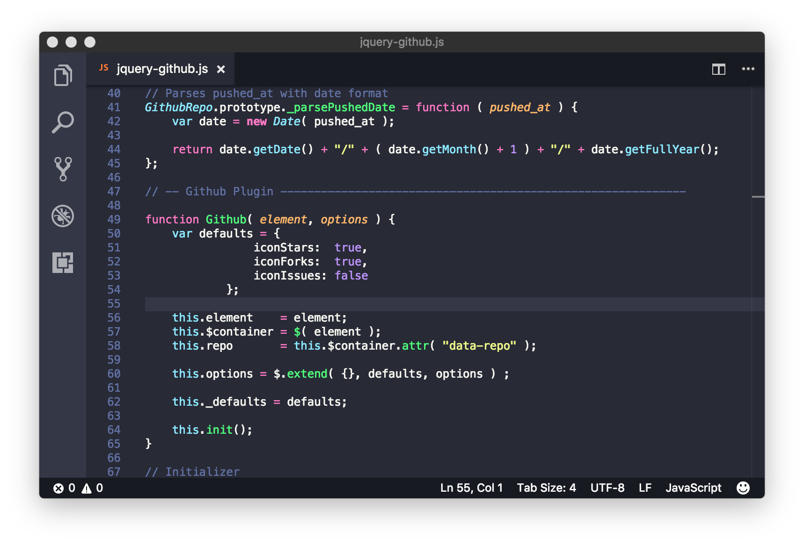

Betik Diller

(İngilizce: scripting language veya script language), betik yorumlamak
için yazılmış özel çalışma-zamanı sistemlerinin (run-time environment)
yorumlayabileceği programlama dilleridir. Diğer programlama dilleri ile
yazılan kodlar makine koduna çevrilip çıkan program doğrudan
çalıştırılırken betik kodları interpreter tarafından doğrudan okunur ve
yorumlanarak işlemler interpreter'ın kendisi tarafından yapılır.
İlk betik dilleri genelde yığın dilleri veya iş denetim dilleri olarak
adlandırılırdı. İlk betik dilleri geleneksel düzenleme, derleme, bağlama
ve çalıştırma işlemlerini kısaltmak için tasarlanmıştı.
JAVASCRİPT

JavaScript (genellikle JS olarak kısaltılır), HTML ve CSS ile birlikte
World Wide Web'in temel teknolojilerinden biri olan programlama dilidir
. Web sitelerinin %97'sinden fazlası, web sayfası hareketleri için
istemci tarafında JavaScript kullanırlar ve kullanılan kodlar genellikle
üçüncü taraf kitaplıkları içerir. Tüm büyük web tarayıcılarında, kaynak
kodunu kullanıcıların cihazlarında yürütebilmek için özel bir JavaScript
motoru bulunur.
JavaScript, ECMAScript standardına uyan, genellikle eş zamanlı olarak
derlenmiş, üst düzey bir dildir. Dinamik yazma, prototip tabanlı obje
yönelimi ve birinci sınıf işlevlere sahiptir. Olay odaklı, işlevsel ve
zorunlu programlama stillerini destekleyen çoklu paradigmadır . Metin,
tarihler, düzenli ifadeler, standart veri yapıları ve Belge Obje Modeli
(DOM) ile çalışmak için uygulama programlama arayüzlerine (API'ler)
sahiptir.
ECMAScript standardı, ağ oluşturma, depolama veya grafik olanakları gibi
herhangi bir giriş/çıkış (I/O) içermez. Pratikte, web tarayıcısı veya
diğer çalıştırma ortamları, I/O için JavaScript API'leri sağlarlar.
JavaScript motorları başlangıçta yalnızca web tarayıcılarında
kullanılıyordu, ancak günümüzde bazı sunucuların ve çeşitli
uygulamaların da temel bileşenleridir. Bu kullanım için en popüler
çalışma zamanı sistemi Node.js'dir.
Java ve JavaScript'in ad, sözdizimi ve ilgili standart kitaplıklar
açısından benzerlikleri olsa da, iki dil birbirinden farklıdır ve
tasarım açısından da büyük farklılıklar gösterir.
PHP

HP : Hypertext Preprocessor (Türkçe: Üstünyazı Önişlemcisi [1]) (Aslen:
Personal Home Page - Kişisel Ana Sayfa) , internet için üretilmiş,
sunucu taraflı, çok geniş kullanımlı, genel amaçlı, içerisine HTML
gömülebilen betik ve programlama dilidir[1]. İlk kez 1995 yılında Rasmus
Lerdorf tarafından yaratılan PHP'nin geliştirilmesi bugün PHP topluluğu
tarafından sürdürülmektedir. Ocak 2013 itibarıyla 244 milyondan fazla
web sitesi PHP ile çalışırken 2.1 milyon web sunucusunda PHP kurulumu
bulunmaktadır.
PHP kodları PHP işleme modülü bulunan bir web sunucusu tarafından
yorumlanır ve çıktı olarak web sayfası üretilir. Bu kodlar veriyi
işlemek üzere harici bir dosyaya kaydedilerek çağırılabildiği gibi
doğrudan HTML kodunun içine de gömülebilir. PHP zaman içinde bir komut
satırı arayüzü sunacak şekilde evrilmiştir, PHP-GTK yardımıyla grafiksel
masaüstü uygulaması geliştirmek de mümkündür.
PHP özgür bir yazılım olup PHP Lisansı ile dağıtılmaktadır. Bu lisans
kullanım şartları kısmında GNU Genel Kamu Lisansı ile örtüşmese de, PHP
tüm web sunuculara ve hemen hemen tüm işletim sistemi ve platforma
ücretsiz olarak yüklenebilir.
PYTHON

Python, nesne yönelimli, yorumlamalı, birimsel (modüler) ve etkileşimli
yüksek seviyeli bir programlama dilidir.
Girintilere dayalı basit söz dizimi, dilin öğrenilmesini ve akılda
kalmasını kolaylaştırır. Bu da ona söz diziminin ayrıntıları ile vakit
yitirmeden programlama yapılmaya başlanabilen bir dil olma özelliği
kazandırır.
Modüler yapısı, sınıf dizgesini (sistem) ve her türlü veri alanı
girişini destekler. Hemen hemen her türlü platformda çalışabilir (Unix,
Linux, Mac, Windows, Amiga, Symbian). Python ile sistem programlama,
kullanıcı arabirimi programlama, ağ programlama, web programlama,
uygulama ve veri tabanı yazılımı programlama gibi birçok alanda yazılım
geliştirebilirsiniz. Büyük yazılımların hızlı bir şekilde
prototiplerinin üretilmesi ve denenmesi gerektiği durumlarda da C ya da
C++ gibi dillere tercih edilir.
Python 1980'lerin sonunda ABC programlama diline alternatif olarak
tasarlanmıştı. Python 2.0, ilk kez 2000 yılında yayınlandı. 2008'de
yayınlanan Python 3.0, dilin önceki versiyonuyla tam uyumlu değildir ve
Python 2.x'te yazılan kodların Python 3.x'te çalışması için
değiştirilmesi gerekmektedir. Python 2 versiyonun resmi geliştirilme
süreci, dilin son sürümü olan Python 2.7.x serisi versiyonların ardından
1 Ocak 2020 itibarıyla resmi olarak sona erdi. Python 2.x geliştirilme
desteğinin sona ermesinin ardından, Python dilinin 3.6.x ve sonraki
sürümlerinin geliştirilmesi devam etmektedir.
RUBY

Ruby, nesneye yönelik, dinamik, reflektif ve esnek bir programlama
dilidir. Ruby dili, Yukihiro Matsumoto tarafından Japonya'da
tasarlanmaya ve geliştirilmeye başlanmıştır.
Sözdizimi olarak, Ada, Perl, Smalltalk, Lisp, Eiffel[3] gibi programlama
dillerinden etkilenen Ruby; Python ile kimi ortak sözdizimi
özelliklerine sahiptir. Fonksiyonel, nesneye yönelik, dinamik, reflektif
gibi çoklu programlama paradigmalarını destekler.
Özgür bir yazılım olan Ruby; GPL ve Ruby lisansı ile lisanslanmıştır.
R

R, istatistiksel hesaplama ve grafikler için yazılım ortamı olup aynı
zamanda programlama dilidir. R Foundation tarafından desteklenen ve GNU
Tasarısının parçası olan bir özgür yazılımdır. Yeni Zelanda Auckland
Üniversitesinden Ross Ihaka ve Robert Gentleman tarafından ortaya
çıkarılan R, hâlihazırda R Geliştirme Çekirdek Ekibi tarafından
geliştirilmektedir. S programlama diline benzeyen R, S'nin uyarlaması
olarak değerlendirilebilir.
İstatistikî yazılım geliştirme için istatistikçiler arasında de fakto
standart haline gelen R, istatistikî yazılım geliştirme ve veri analizi
alanında kullanılmaktadır.
R'nin kaynak kodları GNU Genel Kamu Lisansı altında olup değişik işletim
sistemlerinde kullanılabilir durumdadır. R, komut satırı arayüzü
kullanıyor olsa da değişik grafik kullanıcı arayüzleri de bulunmaktadır.
VBSCRİPT
VBScript veya açılımıyla Visual Basic Script, Microsoft, tarafından 1996 yılında yayınlanmış olan bir script, dilidir. VBScript, Microsoft Internet Explorer'ın HTML, kullanım kapasitesini geliştirme amacıyla tasarlanmıştır. Windows, 10'a kadar tüm işletim sistemleri içerisinde çalışabilen VBScript, yapıları ne yazık ki yalnızca Microsoft Internet Explorer, tarafından desteklenmektedir. Sunucu, taraflı bir dil olan VBscript, bu nedenle çoğu geliştirici tarafından tercih edilmeyen ve çağın gerisinde kaldığı düşünülen bir dildir. VBScript yerine artık çoğu yazılımcı daha gelişmiş bir alternatif olan ve tüm internet tarayıcıları tarafından desteklenen JavaScript'i tercih etmektedir.